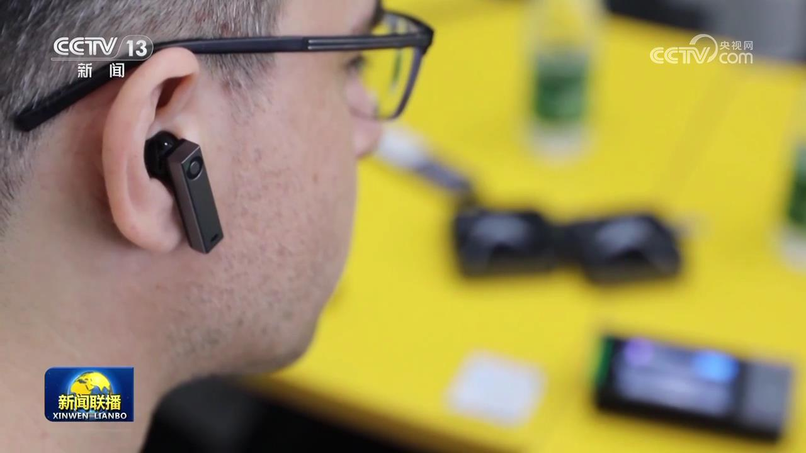
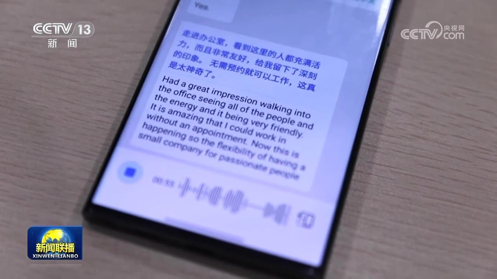
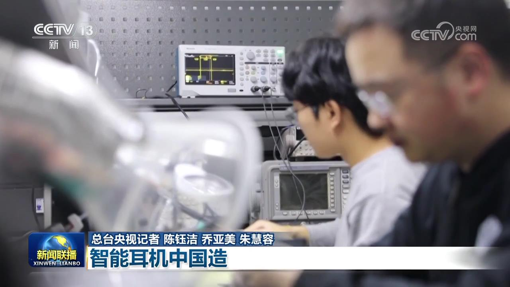
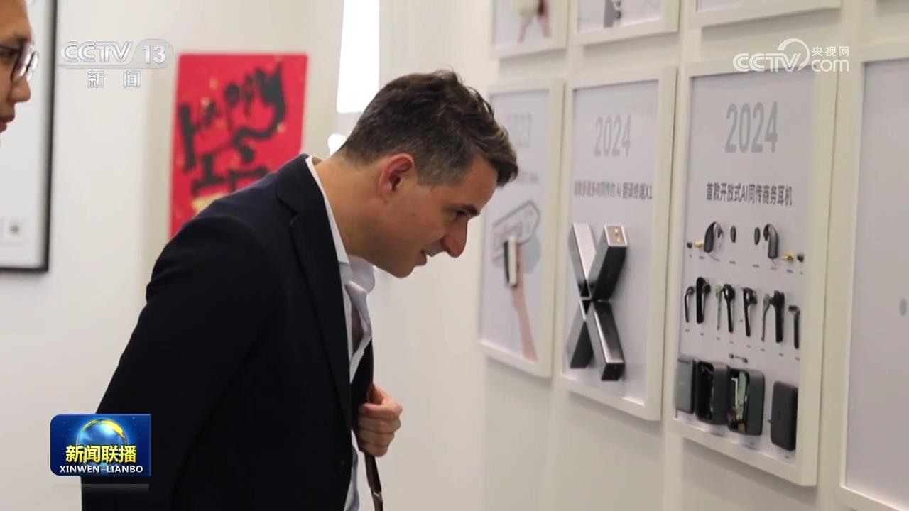

央视网消息（新闻联播）：当前，人工智能技术已经广泛运用于我们的生活中，记者在采访中发现了一款智能翻译耳机，因为能实现同声传译，吸引了全球客商前来采购。而这款创新产品就诞生在一家“年轻”的外贸小企业。

走进深圳南山区的这家企业，清一色的年轻面孔扑面而来。大家不是忙着研发产品，就是在不停接待客户。在其中的一间会议室里，记者遇到了一位叫乔丹的美国人，并用翻译耳机和他进行了对话。

乔丹告诉记者，他的妻子是中国人，他一直希望能找到一款可穿戴的翻译设备，能够像正常聊天一样，实现边听边说。通过现场的测试设备，记者发现，两个说着不同语言的人，各自佩戴上一只耳机，再打开手机端的相应软件设置，约五秒钟延迟时间之后，就可以听到翻译的内容。
不仅是新朋友慕名而来，这段时间，不少老客户也带来了新订单。这位韩国客商今年就准备订购5000台产品。合作多年的北美客户，同样也通过线上视频带来了好消息。

目前，“一对一”的同声传译主要靠人工实现。想要实现戴上耳机就可以随听随说的同声传译，要解决的首要难题是准确识别佩戴者的声音。为此，这家只有100多人的小企业，由算法工程师、声学工程师、嵌入式工程师组成的研发攻关团队就占了50多人。
这段时间，研发人员们奔走在深圳的大街小巷、社区商圈，为的就是收集嘈杂环境下的各项数据，找到彻底消除噪音和杂音的办法。

不仅依托强大的算法赋能，为了将翻译的延迟时间缩短，团队还经常请来一些顶尖译员沟通交流。有着20多年中英文同声传译经验的赵晨威就对人机协同充满了期待。
如今，这个平均年龄只有28岁的研发团队，手握100多项全球专利认证，所生产的翻译耳机远销全球170多个国家和地区，北美市场占有率达到了40%，闯出了一条自己的出海之路。